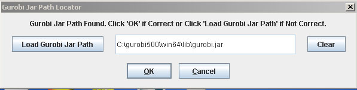

Help Topics
Setting up Gurobi
- Load SBML
- Load CSV
- Load Excel Spreadsheets
- Load from Model Collection
- Saving Files
- Clear Tables
- Exit
Setting Up Gurobi
MOST uses Gurobi Optimization for the FBA and GDBB functions. Gurobi jar file and license can be downloaded at the Gurobi site www.gurobi.com.
In order for the Gurobi Solver to work, the Gurobi jar file must be located. When MOST is first installed, the Gurobi Jar Path interface will appear, and if the Gurobi Jar path has been located, the interface will appear as below:

If this path is correct, click “OK”, otherwise a different path can be located by clicking “Load Gurobi Jar Path”.
If the Gurobi Jar path cannot be located automatically, the interface will appear as below:

The Gurobi Jar Path can be located by clicking “Load Gurobi Jar Path”.
If it is not desired to set up Gurobi at this time, click the “Cancel” button or “X” (frame close button).
The message below will appear:

FBA and GDBB items in the “Analysis” menu will be grayed out. MOST will still be functional for loading, editing and saving files.
If the Gurobi jar is updated or was not located in the above steps, the Gurobi Jar Path can be changed by clicking Options -> Set Gurobi Jar Path (Alt+O then Alt+G).
If 32 bit Java is being run, the Gurobi jar file must also be 32 bit.